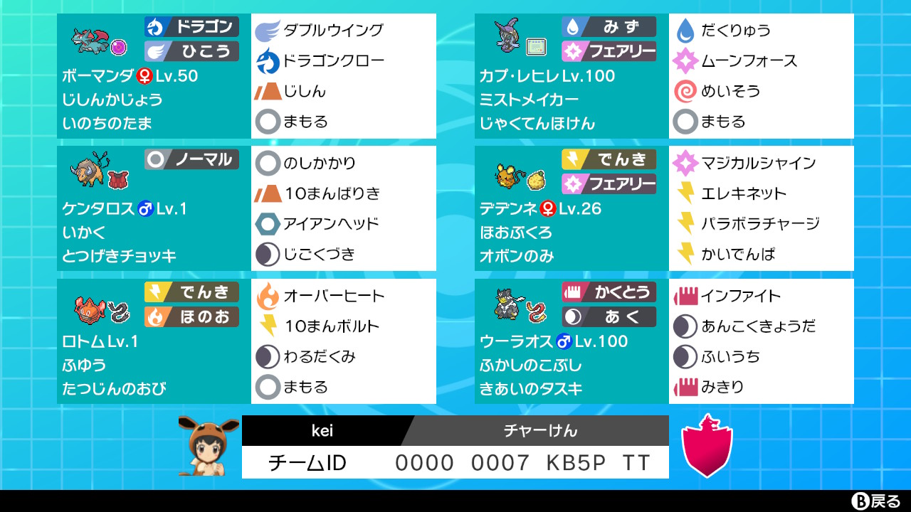

12月14日
【剣盾ダブル・シリーズ7】恐怖！チャージマンケン構築
概要
この記事は『Cha-KEN Advent Calendar 2020』に参加しています。詳細はこちらから。
こんにちは、keiです。今回はポケモン剣盾にて「チャージマンケン」構築を作り使用したのでそのことについて書きたいと思います。
[ポケモンって何なん？(ポケモン初心者向けの解説)]
(ゲームの)ポケットモンスターは、様々な種類が存在するポケモンを捕獲・育成し、そして戦わせる一人向けのRPGです。ポケットモンスターは一人向けのRPGでもありますが、各々が育てたポケモン同士を戦わせるモードも存在し、日夜多くの人々が自慢のポケモンを競い合わせています。[泉さん、チャージマンケン構築について詳しく教えていただけないでしょうか(何をしてきたのか)]
ポケモンにはそれぞれ個性豊かな名前や技が付いています。そこでパラボラ「チャージ」、ボー「マン」ダ、「ケン」タロスという名前や技を持つポケモンたちを組み合わせることで「チャージマンケン」になるパーティを作りました。で、そのチャージマンケンなポケモン達で色んな人と戦ってきた、ということです。…要するに、半分ダジャレです。あとチャー研要素なのですがこれがほぼ全てです。ここから先はほぼポケモンについての記事です。Cha-KEN Advent Calendarとは一体…
構築経緯
まずルールについてですが、シングルバトルではなくダブルバトルです(単純に自分が慣れているルールなため)。次に構築(パーティ)に入れるポケモンについてです。
まず名前に「マン」「ケン」が入っているポケモンとしてボー「マン」ダと「ケン」タロスをチョイスしました。「マン」枠の他の候補としてマンタインやマンムーが存在していたのですが、全体的な種族値が高くダイジェットを扱うことが出来るボーマンダが無難と思いボーマンダにしました。他の「ケン」枠の候補にはケンホロウしかおらず、ボーマンダと弱点(いわ、こおり)や役割(ダイジェットを扱う)が似通ってしまうため、ケンタロスをチョイスしました。
次に「チャージ」が名前に入ってるポケモンですが、そんなポケモンはいません。ということで、技の名前から取ってくることにします。「チャージ」ビーム、ニトロ「チャージ」などもあったのですが、今回私が注目したのはパラボラ「チャージ」です。"パラボラチャージ"は"じしん"や"なみのり"などと同じく味方を巻き込む、威力の低い攻撃技です。威力が低いということは、味方の弱点をついたとしても対してダメージが入らない、つまり、弱点をつかれた際に攻撃と特攻がぐーんと上がる強力な持ち物"じゃくてんほけん"をローリスクで発動することが出来るということです。ということで、パラボラチャージを持つポケモンとしてデデンネを、じゃくてんほけんを持ちパラボラチャージで弱点をつかれるポケモンにカプ・レヒレを採用することになりました。
残りのポケモンは、単純に強力でどの構築に入っても間違いなく活躍できるウーラオス(いちげきのかた)と、デデンネが電気タイプのポケモンとしての役割を果たせないと感じたためヒートロトムをチョイスしました。
個別解説
| ボーマンダ | じしんかじょう | いのちのたま | |
| 171(4)-187(252)-100(x)-117(x)-100(x)-167(252) | |||
| ダブルウイング | げきりん | じしん | まもる |
| 攻撃:なるべく相手を一撃で倒せるよう全振り | |||
| 素早さ:ウーラオスは倒しておきたいので抜けるよう全振り | |||
ダイジェットで相手を倒すことで特性"じしんかじょう"が発動を発動させ攻撃を上げ、攻撃と素早さが上がった状態で相手を圧倒することを目標とするポケモンです。
技はダイジェットの元となる"ダブルウイング"、タイプ一致のドラゴン技の中でも一番扱いやすい"ドラゴンクロー"、相性補完に優れダイアースの特防アップが強力な"じしん"、狙われやすいポケモンなので、一旦技をスカし味方のポケモンに先に邪魔な相手を倒してもらうための"まもる"となっています。持ち物はなるべく相手を倒せるように火力を上げるための"いのちのたま"。
今作の環境では強力な岩技・氷技が飛んでくることが多く、またダイジェットをしたとしても行動順が逆転する"トリックルーム"、素早さが2倍になる"おいかぜ"といった技を相手が持ってることが多く、ダイマックスをこのポケモンに割くのは不安定だと感じました。よって後述のカプ・レヒレにダイマックスを譲ることが多かったです。ダイジェット弱体化しろとよく言われるんですけど、ダブルバトルだとあくまでS操作の内の1つでしかないんですよね
とはいえ"ダイジェット"＋"じしんかじょう"は通ったらそのまま勝ちが決まるぐらいの強さではありました。
ケンタロス |
いかく | とつげきチョッキ | |
| 150(x)-152(252)-115(x)-54(x)-90(x)-178(252) | |||
| のしかかり | 10まんばりき | アイアンヘッド | じごくづき |
| 攻撃:火力が足りないので全振り | |||
| 素早さ:とりあえず全振り | |||
| 備考:よく見ると努力値の振り忘れがある(全く不覚の至りです) | |||
ただしケンタロス自身の耐久や攻撃力はほとんどなく、弱点をつけど相手は倒せず、特防を上げる"とつげきチョッキ"も焼け石に水な程でした。持ち物をもっと攻撃的なものにして、メインウェポンののしかかりもすてみタックルにした方が良かったかもしれません。
なぜ"じしん"(威力100、命中100)ではなく"10まんばりき"(威力95、命中95)なのかというと、"じしん"はダブルバトルだと味方を巻き込み、更には威力が下がってしまう(100→75)になってしまうためです。
カプ・レヒレ |
ミストフィールド | じゃくてんほけん | |
| 161(124)-85(x)-135(x)-145(132)-95(x)-137(252) | |||
| ムーンフォース | だくりゅう | めいそう | まもる |
| HP:そこそこの耐久 | |||
| 特攻:そこそこの火力 | |||
| 素早さ:全振り | |||
"じゃくてんほけん"持ちのカプ・レヒレはマイナーな型ですが、元々の耐久とそこそこの火力、奇襲性能も相まって普通の構築に入れても強いのでは？と感じました。
なぜ"なみのり"(威力90、命中100)じゃなくて"だくりゅう"(威力90、命中85)なのかというと"なみのり"も"じしん"と同じく味方を巻き込むからです。"だくりゅう"は味方を巻き込まずに相手2体を攻撃できるため、相手2体を一気に倒すなんてこともでき強力です。
"めいそう"は相手がトリックルーム主軸の構築だった場合、ダイマックスしたケンタロスの"ダイスチル"・"ダイアース"で相手の猛攻を凌ぎながらめいそうし続けることで、トリックルームが切れたときに手痛い反撃を加えることが出来るため必要だと思い入れてあります。
また素早さに努力値を振っていますが、これは完全に蛇足でいりませんでした。レヒレのSは瞑想ミラー以外には必要ないのでなるべく努力値を割かないようにすべきです。
| デデンネ | ほおぶくろ | オボンのみ | |
| 174(252)-69(x)-78(4)-101(x)-87(x)-168(252) | |||
| マジカルシャイン | パラボラチャージ | エレキネット | かいでんぱ |
| HP:耐久が足りないので全振り | |||
| 素早さ:相手より早く撃ちたい技が多いので全振り | |||
"エレキネット"は相手2匹のポケモンの素早さを下げる技で、例えば行動順が
デデンネ→ウーラオス→カプ・レヒレ
のような場合、デデンネがウーラオスにエレキネットを撃つことで行動順が
デデンネ→カプ・レヒレ→ウーラオス
となりウーラオスに先制してムーンフォースなどをブチ込めることが出来るようになるので非常に重要な技です。
"かいでんぱ"は相手1体の特攻を2段階下げる強力な補助技で、味方を延命させることが出来る強力な技です。
こんな重要で強力な技を持つデデンネなのですが、努力値を振ったのにも関わらず耐久がありません。ダイマックス技を受けてワンパンが当たり前。ジュラル星人レベルのペラさです。なので本来はきあいのタスキを持たせるべきなのですが、ウーラオスに必要な持ち物なのでそれは出来ず、サポート役なのにサポートの役割を果たせず散る悲しいポケモンに…
とはいえ"パラボラチャージ"でカプ・レヒレの"じゃくてんほけん"を起動させる最低限の役割はできることが多かったです。
| ウーラオス一撃 | ふかしのこぶし | きあいのタスキ | |
| 176(x)-182(252)-120(x)-74(x)-80(x)-163(252) | |||
| インファイト | あんこくきょうだ | ふいうち | みきり |
| 耐久はきあいのタスキに任せて攻撃と素早さに全振り | |||
このポケモンに関してこれ以上何も言うことはありません。魔王様の安定感レベルで信頼性が高いポケモンです。
| ヒートロトム | ふゆう | たつじんのおび | |
| 157(252)-76(x)-127(x)-126(4)-127(x)-106(252) | |||
| オーバーヒート | 10まんボルト | わるだくみ | まもる |
| HP:耐久が足りないので全振り | |||
| 特攻:"たつじんのおび"と"わるだくみ"に任せてほぼ振らず | |||
| 素早さ:なんとなく全振り | |||
…が、全くいなかったので選出することはほぼありませんでした。一回だけダダリンを"わるだくみ"＋"ダイバーン"で潰す活躍を見せましたがそれだけ。ハッキリ言ってこの枠は別のポケモンで全然いいと思います。
選出
初手 ボーマンダ＋ケンタロス
後続 カプ・レヒレ＋ウーラオス
ボーマンダはダイマックスしなさそうで倒せそうなポケモンに攻撃。ケンタロスはボーマンダとともに集中攻撃するか 相手のじゃくてんほけんを踏み抜かないように攻撃。
うまくいったら攻撃素早さでが上昇したボーマンダで荒らして勝ち。そうでなくても相手のダイマックスは潰して、 ウーラオスで一掃できる状況に持っていきたいです。
初手 カプ・レヒレ＋デデンネ
後続 ウーラオス＋ボーマンダorケンタロス
カプ・レヒレがダイマックスし、デデンネが"パラボラチャージ"して"じゃくてんほけん"を起動。
相手のダイマックスポケモンを処理し、ウーラオスが一掃して勝ちです。
とてつもない種族値を持つが特性"スロースタート"でパワーダウンしてしまうレジギガスをマタドガスの"かがくへんかガス"で特性を消して補助するコンボ。
初手 ウーラオス＋デデンネ
後続 ボーマンダ＋カプ・レヒレorケンタロス
デデンネが"エレキネット"を撃ち、ウーラオスはレジギガスに"インファイト"。
ウーラオスが倒れたらダイマックスしたボーマンダでレジギガスを処理。
勝つのはかなり厳しい組み合わせ。

ドラパルトのなみのりなどでセキタンザンのじゃくてんほけんとじょうききかん(素早さ6段階上昇)を発動し暴走させるコンボ。
初手 カプ・レヒレ＋デデンネ
後続 ボーマンダ＋ウーラオスorケンタロス
カプ・レヒレで"ダイストリーム"を撃っても相手のセキタンザンは"ダイバーン"で晴れにすることで耐えてきます。
とはいえそれ以外何もできないのでカプ・レヒレは"ダイストリーム"、デデンネは"かいでんぱ"をセキタンザンに撃ちます。
ほぼ勝てません。
戦績
(本ロムのレートを下げたくなかったので)サブロムでビギナー級からスタート。8勝5敗でモンスターボール級ランク5まで到達という何とも言えない結果に。
反省点
総括
結果としては微妙でしたが制限のかかった状況で構築を考えるのは新鮮で非常に楽しかったです。たまにはガチじゃないエンジョイ気味の構築も面白いですね。正直ダブルバトルを始めるならこんな弱い構築じゃなくてレジギガスとかを使った方がマシですが、興味のある方はどうぞ。
質問や苦情はこちらまでお願いします。 Twitter マシュマロ